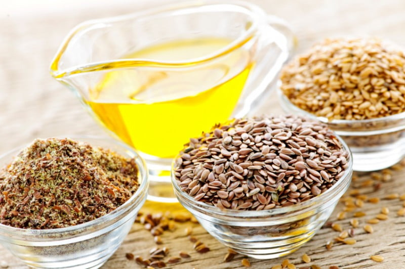
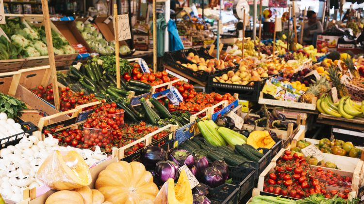

Coffee
Coffee is the 117th most traded product in the world consumed by people located in all corners of the planet.
Ethiopia has been growing coffee for centuries, and it is the birthplace of Coffea Arabica.Ethiopia is known for
exportring coffee to the world market.And
ZELALEM KEBEDE IMPORT EXPORT is one of the exporter to export the above commodities.
Last updated a while ago

Oil Seeds
Ethiopia grows high-value oilseeds that are coveted around the world, and are in high demand.
The seeds produced in Ethiopia include sesame seeds, mustard, pumpkin, sunflower, rapeseed,
castor seed, and groundnuts. Oilseeds accounted for $446 million in exports for the year 2022.
And
ZELALEM KEBEDE IMPORT EXPORT is one of the exporter to export the above commodities.
Last updated a while ago
Kchat
Ethiopia has exported more than USD 116.5 million of Chat in 2021. Chat exports
have been increasing over the past year 2020/21, after witnessing a dip in the 4th
quarter of the previous year. Exports have increased by 69% compared to the last quarter
of the same year, taking the highest percentage increase in volume among other exports
including coffee and textile products. And
ZELALEM KEBEDE IMPORT EXPORT is contributing more.
Last updated a while ago

Pulses
Ethiopia pulses broadly refer to leguminous crops that grow for food and for oil.
The most common ones are dry beans and pod beans. They range from lentils, chickpeas,
cowpeas, pigeon peas and dry common beans, among others. As a company we are working to increase Pulses export in Ethiopia.
Last updated a while ago

Vegitables
Ethiopia is known for growing a wide range of vegetables that include green beans,
snow peas, broccoli, asparagus, okra, cabbages, cauliflower, and eggplant among others.
Extensive irrigation and a vast workforce support vegetable growing. And we are working hard to increase the export rate in Ethiopia.
Last updated a while ago